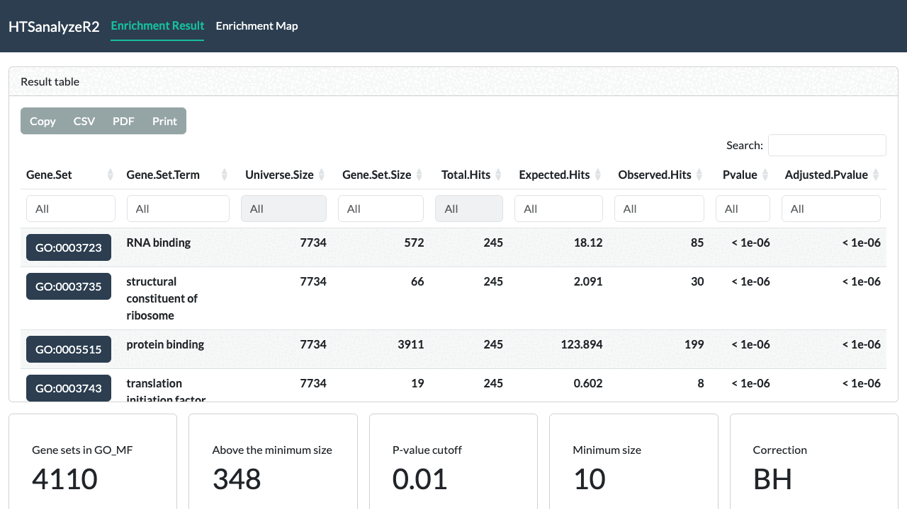
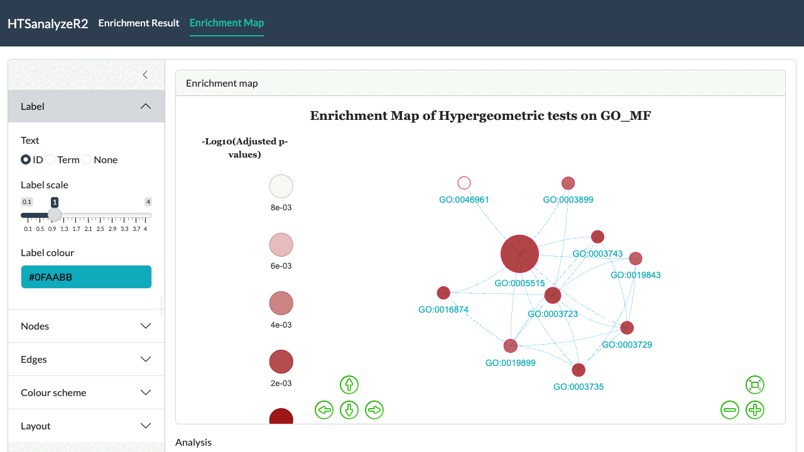
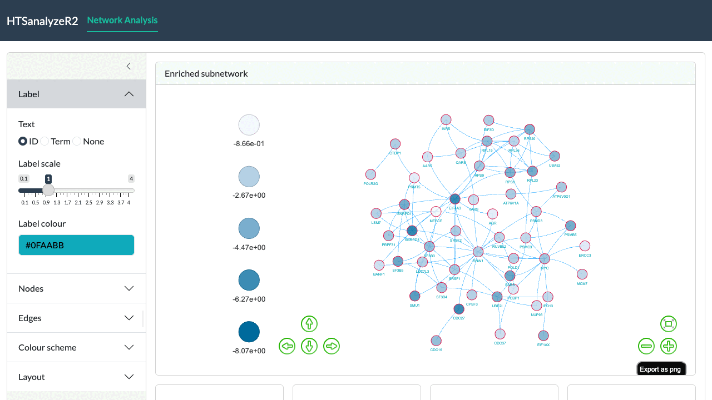
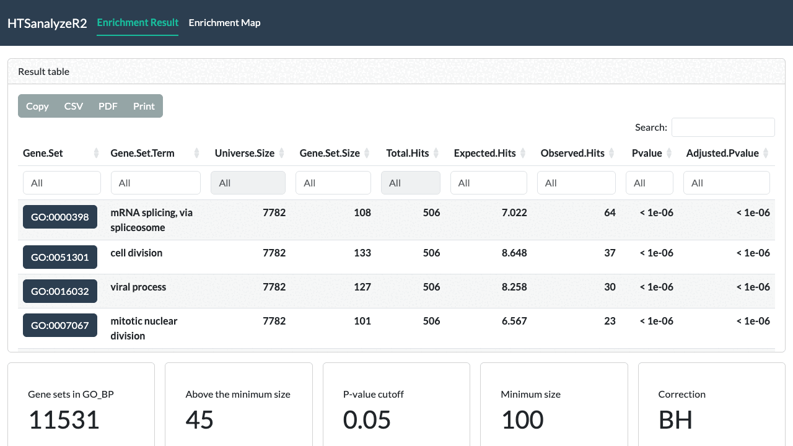
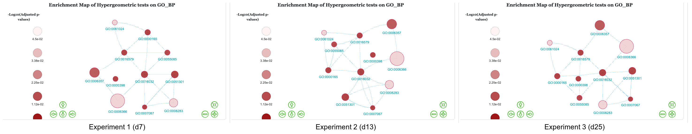

Interactive-Shiny-report-of-HTSanalyzeR2
Lina Zhu
Department of Biomedical Sciences, City University of Hong Kong, Hong KongFeng Gao
Department of Biomedical Sciences, City University of Hong Kong, Hong KongXiupei Mei
Department of Computer Science, City University of Hong Kong, Hong KongXin Wang
Department of Biomedical Sciences, City University of Hong Kong, Hong Kong2026-09-18
Source:vignettes/Interactive-Shiny-report-of-HTSanalyzeR2.Rmd
Interactive-Shiny-report-of-HTSanalyzeR2.RmdIntroduction
In this short tutorial, we will give a detailed illustration for the interactive Shiny report of HTSanalyzeR2 to visualize the results and modify figures in different aspects.
Interactive Shiny report visualization
Visualize single GSCA object for individual data set
For single data set analysis, after performing gene set analysis by HTSanalyzeR2, we can get a GSCA object and use the function report to launch the Shiny report.
The GSOA result table [Figure1]

The above screenshot shows the GSOA result table where users can either get a general summary of the analysis parameters, choose which analysis and which gene set collection to show or download the result by different format.
Parameters for modifying the figure [Figure2]
The settings live in a collapsible panel beside every graph. It has five sections: Label, Nodes, Edges, Colour scheme and Layout. Every change is applied to the rendered graph in place, without recomputing the analysis or resetting the layout.
- Label: how nodes are labelled, with three parameters: Text (gene set ID, term, or none), Label scale and Label colour.
- Nodes: Scale, Opacity, Border width, Border colour and the colour used for nodes without a phenotype value.
- Edges: Scale and Colour.
- Colour scheme: the two ends of the positive and of the negative colour scale. The sign of the enrichment score or phenotype decides which scale a node uses.
-
Layout: the node-repulsion parameters of the
force-directed layout.
- Mode: Lin-Log mode and Strong gravity mode change how the layout treats distance.
- Parameters: Edge repel and Adjust sizes make the figure looser.
- Gravity: ranging from -50 to 50. The larger it is, the looser the pattern.

The above screenshot shows the enrichment map of a GSOA result together with the settings panel. Hovering a node shows its identifier, term and value; the buttons in the lower right pan, zoom, fit the view and export the graph as PNG.
Visualize single NWA object for individual data set
For single data set analysis, after performing enriched subnetwork analysis by HTSanalyzeR2, we can get a NWA object and use the function report to launch the Shiny report.
The identified subnetwork [Figure3]

The below screenshot shows the identified subnetwork where users can either get a general summary of the subnetwork attributes, modify the subnetwork based on their data and preference or download the subnetwork as PNG for further use.
Visualize a list of GSCA objects for “Time-course” data
data(gscaTS)
## To make the figure more compact, we set a cutoff
## to move any other edges with low Jaccard coefficient.
reportAll(gscaTS, cutoff = 0.03)GSEA results table for “Time-course” data [Figure4]

The above screenshot shows the GSOA result tables for Time-course data with three time points where users can either get a general summary of the analysis parameters, choose which analysis, which gene set collection and which experiment result to show or download the result by different format.
Union enrichment map for “Time-course” data [Figure5]

The below screenshot shows the union enrichment maps of GSEA result for “Time-course” data with filtered edges by setting a cutoff on the edges. The Experiment slider moves through the time points while the layout is kept fixed, so the three maps can be compared directly. Here, we can clearly see a gradual change among them.
Visualize both GSCA and NWA objects simultaneously
reportAll(gsca = gscaTS, nwa = nwaTS)The above screenshot shows the union subnetworks for “Time-course” data. As with the enrichment maps, the Experiment slider moves through the time points while the layout stays fixed, so a gradual change among the three union subnetworks can be seen clearly.
Session Info
## R version 4.6.0 (2026-04-24)
## Platform: aarch64-apple-darwin23
## Running under: macOS Tahoe 26.5.2
##
## Matrix products: default
## BLAS: /Library/Frameworks/R.framework/Versions/4.6/Resources/lib/libRblas.0.dylib
## LAPACK: /Library/Frameworks/R.framework/Versions/4.6/Resources/lib/libRlapack.dylib; LAPACK version 3.12.1
##
## locale:
## [1] C.UTF-8/C.UTF-8/C.UTF-8/C/C.UTF-8/C.UTF-8
##
## time zone: Asia/Shanghai
## tzcode source: internal
##
## attached base packages:
## [1] stats graphics grDevices utils datasets methods base
##
## other attached packages:
## [1] BiocStyle_2.40.0
##
## loaded via a namespace (and not attached):
## [1] digest_0.6.39 desc_1.4.3 R6_2.6.1
## [4] bookdown_0.48 fastmap_1.2.0 xfun_0.60
## [7] cachem_1.1.0 knitr_1.51 htmltools_0.5.9
## [10] rmarkdown_2.31 lifecycle_1.0.5 cli_3.6.6
## [13] sass_0.4.10 pkgdown_2.2.1 textshaping_1.0.5
## [16] jquerylib_0.1.4 systemfonts_1.3.2 compiler_4.6.0
## [19] tools_4.6.0 ragg_1.5.2 bslib_0.10.0
## [22] evaluate_1.0.5 yaml_2.3.12 BiocManager_1.30.27
## [25] otel_0.2.0 jsonlite_2.0.0 rlang_1.3.0
## [28] fs_2.1.0 htmlwidgets_1.6.4